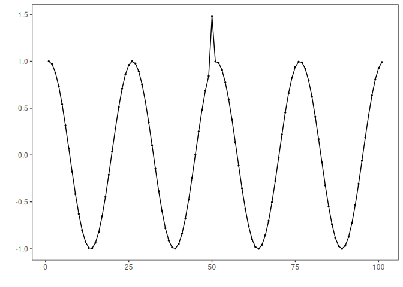

Harbinger is a framework for event detection in time series. It provides an integrated environment for anomaly detection, change point detection, and motif discovery. Harbinger offers a broad range of methods and functions for plotting and evaluating detected events.
For anomaly detection, methods are based on: - Machine learning model deviation: Conv1D, ELM, MLP, LSTM, Random Regression Forest, and SVM - Classification models: Decision Tree, KNN, MLP, Naive Bayes, Random Forest, and SVM - Clustering: k-means and DTW - Statistical techniques: ARIMA, FBIAD, GARCH
For change point detection, Harbinger includes: - Linear regression, ARIMA, ETS, and GARCH-based approaches - Classic methods such as AMOC, ChowTest, Binary Segmentation (BinSeg), GFT, and PELT
For motif discovery, it provides: - Methods based on Hashing and Matrix Profile
Harbinger also supports multivariate time series analysis and event evaluation using both traditional and soft computing metrics.
The architecture of Harbinger is based on Experiment Lines and is built on top of the DAL Toolbox. This design makes it easy to extend and integrate new methods into the framework.
Installation
The latest version of Harbinger is available on CRAN:
install.packages("harbinger")You can install the development version from GitHub:
# install.packages("devtools")
library(devtools)
devtools::install_github("cefet-rj-dal/harbinger", force = TRUE, upgrade = "never")Examples
Examples of Harbinger are organized by application area:
library(harbinger)
#> Registered S3 method overwritten by 'quantmod':
#> method from
#> as.zoo.data.frame zoo
#> Registered S3 methods overwritten by 'forecast':
#> method from
#> head.ts stats
#> tail.ts stats
#loading the example database
data(examples_anomalies)
#model
model <- harbinger()
#stub detector
detection <- detect(model, examples_anomalies$simple$serie)
# filtering detected events
library(dplyr)
print(detection |> dplyr::filter(event==TRUE))